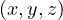
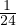
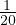
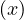
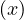

Professor: Tom Dupuis
Student e-mail: jose-antonio.lorencio-abril@student-cs.fr
This is a summary of the course Machine Learning taught at the Université Paris Saclay - CentraleSupélec by Professor Tom Dupuis in the academic year 23/24. Most of the content of this document is adapted from the course notes by Dupuis, [1], so I won’t be citing it all the time. Other references will be provided when used.
Artificial Intelligence is a wide concept, encompassing different aspects and fields. We can understand the term AI as the multidisciplinary field of study that aims at recreating human intelligence using artificial means. This is a bit abstract, and, in fact, there is no single definition for what this means. Intelligence is not fully understood, and thus it is hard to assess whether an artificial invention has achieved intelligence, further than intuitively thinking so.
For instance, AI involves a whole variety of fields:
Perception
Knowledge
Cognitive System
Planning
Robotics
Machine Learning (Neural Networks)
Natural Language Processing
Leveraging all of these, people try to recreate or even surpass human performance in different tasks. For example, a computer program that can play chess better than any human could ever possibly play, such as Stockfish, or a system that is able to understand our messages and reply, based on the knowledge that it has learnt in the past, such as ChatGPT and similar tools. Other examples are self-driving cars, auto-controlled robots, etc.
Therefore, AI is a very wide term, which merges many different scientific fields. Machine Learning, on the other side, is a narrower term, which deals with the study of the techniques that we can use to make a computer learn to perform some task. It takes concepts from Statistics, Optimization Theory, Computer Science, Algorithms, etc. A relevant subclass of Machine Learning, which has come to be one of the most prominent fields of research in the recent years, is Neural Networks or Deep Learning, which consists on an ML technique based on the human brain. Many amazing use cases that we see everywhere, like Siri (Apple assistant), Cortana (Windows assistant), Amazon recommender system, Dall-E (OpenAI image generation system), etc. Not only this, but the trend is growing, and the interest in DL is continuously increasing.
This is partly also due to the increase in computing resources, and the continuous optimization that different techniques are constantly experiencing. For instance, for a model trained on one trillion data points, in 2021 the training process required around 16500x less compute than a model trained in 2012.
But not everything is sweet and roses when using DL. Since these systems are being involved in decision making processes, there are some questions that arise, like whose responsibility is it when a model fails? Moreover, data is needed to train the models, so it is relevant to address how datasets should be collected, and to respect the privacy of the people that produce data. In addition, the recent technologies that are able to generate new content and to modify real content, make it a new issue that AI can create false information, mistrust, and even violence or paranoia.
Nonetheless, let’s not focus on the negative, there are lots of nice applications of DL, and it is a key component to deal with data, achieving higher performance than traditional ML techniques for huge amount of data.
In 1950, Alan turing aimed to answer the question ’Can machines think?’ through a test, which came to be named the Turing Test, and consists in a 3 players game. First, a similar game is the following: 2 talkers, a man and a female, and 1 interrogator. The interrogator asks questions to the talkers, with the aim of determining who is the man and who is the female. The man tries to trick the interrogator, while the woman tries to help him to identify her.
Then, the Turing Test consists in replacing the man by an artificial machine. Turing thought that a machine that could trick a human interrogator, should be considered intelligent.
Later, in 1956, in the Dartmouth Workshop organized by IBM, the term Artificial Intelligence was first used to describe every aspect of learning or any other feature of intelligence can be so precisely described that a machine can be made to simulate it.
From this year on, there was a focus on researching about Symbolic AI, specially in three areas of research:
Reasoning as search: a different set of actions leads to a certain goal, so we can try to find the best choice of action to obtain the best possible outcome.
Natural Language: different tools were developed, following grammar and language rules.
Micro world: small block based worlds, that the system can identify and move.
In 1958, the Perceptron was conceived, giving birth to what is called the connectionism, an approach to AI based on the human brain, and a big hype that encouraged funding to support AI research. At this era, scientists experience a bit of lack of perspective, thinking that the power of AI was much higher than it was. For instance, H. A. Simon stated in 1965 that ’machines will be capable, within twenty years, of doing any work a man can do.’ We can relate to our time, with the huge hype that AI is experiencing, as well as the many apocaliptic theories that some people are making. Maybe we are again overestimating the power of AI.
The time from 1974 to 1980 is seen as the first winter of AI, in which research was slowed down and funding was reduced. This was due to several problems found at the time:
There were few computational resources.
The models at the time were not scalable.
The Moravec’s paradox: it is comparatively easy to make computers exhibit adult level performance on intelligence test or playing checkers, and difficult or impossible to give them the skills of a one-year-old when it comes to perception and mobility.
Marvin Minsky made some devastating critics to connectionism, compared to symbolic, rule-based models:
Limited capacity: Minsky showed that single-layer perceptrons (a simple kind of neural network) could not solve certain classes of problems, like the XOR problem. While it was later shown that multi-layer perceptrons could solve these problems, Minsky’s work resulted in a shift away from neural networks for a time.
Lack of clear symbols: Minsky believed that human cognition operates at a higher level with symbols and structures (like frames and scripts), rather than just distributed patterns of activation. He often argued that connectionist models lacked a clear way to represent these symbolic structures.
Generalization and Abstraction: Minsky was concerned that connectionist models struggled with generalizing beyond specific training examples or abstracting high-level concepts from raw data.
Inefficiency: Minsky pointed out that many problems which seemed simple for symbolic models could be extremely computationally intensive for connectionist models.
Lack of explanation: Connectionist models, especially when they become complex, can be seen as "black boxes", making it difficult to interpret how they arrive at specific conclusions.
Over-reliance on learning: Minsky believed that not all knowledge comes from learning from scratch, and some of it might be innate or structured in advance. He felt connectionism put too much emphasis on learning from raw data.
In 1980, there was a boom in expert knowledge systems that made AI recover interest. An expert system solves specific tasks following an ensemble of rules based on knowledge facilitated by experts. A remarkable use case was the XCON sorting system, developed for the Digital Equipment Corporation, which helped them save 40M$ per year. In addition, connectionism also came again on scene, thanks to the development of backpropagation applied to neurons, by Geoffrey Hinton. All these achievement made funding to come back to the field.
Nonetheless, there came a second winter of AI, from 1987 to 1994, mainly because several companies were disappointed and AI was seen as a technology that couldn’t solve wide varieties of tasks. The funding was withdrawn from the field and a lot AI companies went bankrupt.
Luckily, from 1995 there started a new return of AI in the industry. The Moore’s Law states that speed and memory of computer doubles every two years, and so computing power and memory was rapidly increasing, making the use of AI systems more feasible each year. During this time, many new concepts were introduced, such as intelligent agents as systems that perceive their environment and take actions which maximize their chances of success; or different probabilistic reasoning tools such as Bayesian networks, hidden Markov models, information theory, SVM,... In addition, AI researchers started to reframe their work in terms of mathematics, computer science, physics, etc., making the field more attractive for funding. A remarkable milestone during this time was the victory of Deep Blue against Garry Kasparov.
The last era of AI comes from 2011 to today, with the advent and popularization of Deep Learning (DL), which are deep graph processing layers mimicking human neurons interactions. This happened thanks to the advances of hardware technologies, that have enabled the enormous computing requirements needed for DL. The huge hype comes from the spectacular results shown by this kind of systems in a huge variety of tasks, such as computer vision, natural language processing, anomaly detection,...
In summary, we can see how the history of AI has been a succession of hype and dissapointment cycles, with many actors involved and the industry as a very important part of the process.
In this section, we review some notation, and basic knowledge of Linear Algebra, Probability and Machine Learning.
A scalar is a number, either real and usually denoted x ∈ ℝ, or natural and denoted n ∈ ℕ. A vector is an array of numbers, usually real, x ∈ ℝn, or
A matrix is a 2-dimensional array of numbers, A ∈ ℝn×m, or

A tensor is an n-dimensional array of numbers, for example A ∈ ℝm×k×p is a 3-dimensional tensor.
Usually, we will be working with matrices, which can be operated in different ways:
Transposition: AT is the transposed of A, defined as  ij = Aj,i.
ij = Aj,i.
Multiplication: Let A ∈ ℝm×k,B ∈ ℝk×n, their multiplication, C ∈ ℝm×n is defined as
Note that the following holds for every matrix A,B:
Point-wise operations: if we have two matrices of the same size, A,B ∈ ℝm×n, we can use apply scalar operator point-wise to each pair of elements in the same position in the two matrices. For example, the sum or the substraction of matrices.
There are also special matrices:
Identity matrix: the identity matrix is a square matrix that preserves any vector it is multiplied with. For vectors of size n, the identity matrix In verifies

Inverse matrix: the inverse of a square matrix, A ∈ ℝn×n, when it exists, is defined as the only matrix A-1 such that

Another important concept is that of the norm, which is basically measuring how far a point is from the origin of the space and can be used to measure distances:
A very important family of norms is the Lp norm, defined as
The Euclidean norm is the L2 norm, noted  and equivalent to computing . In Machine Learning, it is not
uncommon to find the use of the squared Euclidean norm, since it maintains the ordinals and is easier to operate with.
The Manhattan norm is the L1 norm, and it is used when the difference between zero and nonzero elements is
important. Finally, the Max norm is the L∞, or
and equivalent to computing . In Machine Learning, it is not
uncommon to find the use of the squared Euclidean norm, since it maintains the ordinals and is easier to operate with.
The Manhattan norm is the L1 norm, and it is used when the difference between zero and nonzero elements is
important. Finally, the Max norm is the L∞, or  ∞ = maxi
∞ = maxi .
.
A random variable, X, is a variable that can take different values, x, randomly. They can be discrete, like the number drawn from a dice, or continuous, like the humidity in the air.
A probability distribution, p, is a Probability Mass Function (PMF) for discrete variables, and a Probability Density Function (PDF) for continuous random variables. It must satisfy:
The domain of p describe all possible states of X.
∀x ∈ X,p ≥ 0.
≥ 0.
∫
x∈Xp dx = 1.
dx = 1.
It is usual to have two (or more) random variables, X and Y , and to be interested in the probability distribution
of their combination, p . In this context, we define the marginal probability of the variable X
as
. In this context, we define the marginal probability of the variable X
as
The conditional probability of the variable Y conditioned to X = x is

Finally, there is the chain rule of conditional probabilities, in which we start with n random variables, X1,...,Xn, and it follows:

Example 2.1. For example, let’s say X = , Y =  and Z =
and Z =  with the following probabilities:
with the following probabilities:
| X | Y | Z | p |
| 1 | 1 | 1 |  |
| 1 | 1 | 2 |  |
| 1 | 2 | 1 |  |
| 1 | 2 | 2 |  |
| 2 | 1 | 1 |  |
| 2 | 1 | 2 |  |
| 2 | 2 | 1 | |
| 2 | 2 | 2 |  |
| 3 | 1 | 1 |  |
| 3 | 1 | 2 |  |
| 3 | 2 | 1 |  |
| 3 | 2 | 2 |  |
Then, the marginal probabilities for the variable X are


The conditional probability for the event is:
The conditional probability for the event is:

The probability of the event could be computed from the conditional probabilities as follows, in case we only knew these:
| P = | P ⋅ P ⋅ P ⋅ P ⋅ P | ||
| = | ⋅ ⋅ = = ⋅ = =  . . |
When there are several variables, it is possible that the value of one of them is dependant, somehow, on the values that the other variables take; or that it is not:
In Statistics and Machine Learning, there are some measures that summarize information about random variables, and that hold great importance.
Definition 2.3. The expectation of a function f where x ~ p is the average value of f over x:
where x ~ p is the average value of f over x:
The variance of f measures how the values of f varies from its average:
measures how the values of f varies from its average:
![[ 2]
V ar[f (x)] = E (f (x)- E [f (x)]) ,](summary66x.png)
and the standard deviation is the square root of the variance.
The covariance of two random variables provides informaiton about how much two values are linearly
related. More generally, if we apply two functions f , where x ~ p
, where x ~ p , and g
, and g , where y ~ p
, where y ~ p , the
covariance between them is:
, the
covariance between them is:
![Cov[f (x),g(y)] = E[(f (x)- E [f (x)])(g(y)- E[g(y)])].](summary71x.png)
To finalize with this review chapter, we are going to remember some basic concepts of Machine Learning.
First, let’s give a definition of the concept:
The task T can be classification, regression, translation, generation, anomaly detection,...
The performance measure P is specific to the tasks involved, and can be accuracy for classification, for example. It is measured on a test set.
The experience E is divided into two main categories:
Supervised learning: a dataset of points associated with a label or a target determines the expected outcome of each event.
Unsupervised learning: a dataset of points without labels or targets, in which the desirable outcome needs to be define in some different way.
Mathematically, we can formalize this as having a dataset of m points and k features, which can be represented as a matrix X ∈ ℝm×k. In the case of supervised learning, X is associated with a vector of labels, y, and we aim to learn a joint distribution, p to infer
The goal is then to find a function  that associates each x to the best approximation of y, and that is capable of
generalizing to unseen data. Usually,
that associates each x to the best approximation of y, and that is capable of
generalizing to unseen data. Usually,  is parameterized by a set of parameters, θ, which are learnt during
training.
is parameterized by a set of parameters, θ, which are learnt during
training.
The main challenge of an ML model is generalization to unseen data estimated on test data after the training on training data. Overfitting occurs when the gap between training error and test error is too large, while underfitting occurs when the training error is too large. The capacity of a model is the range of functions that it is able to leanr and control how likely the model can overfit or underfit. This is visualized in Figure 1.
When we want to train a model, we will define the parameters that characterize it, and then we need to obtain the best possible of the parameters, according to the data. For this, we use estimators:
There are different ways to construct estimators, but one that is frequently used and that has solid mathematical
foundations is the maximum likelihood estimator. Consider a dataset X =  and p
and p a parametric
family of probability distribution that maps for each x the probability pdata
a parametric
family of probability distribution that maps for each x the probability pdata . This is, for each θ, p
. This is, for each θ, p is a
probability density function. The maximum likelihood estimator is then
is a
probability density function. The maximum likelihood estimator is then
| θML = | arg maxθpmodel | ||
| = | arg maxθ ∏ i=1np model, |
considering that all instances of data are independent and identically distributed (iid). It is also a common practice to use the maximum log-likelihood instead, removing the product and avoiding floating point issues, since when the dataset is large, the product will rapidly go to 0. In addition, the logarithm does not modify the ordinals of the function. Therefore, we can use:


![( ) [ ]
bias ˆθ = E ˆθ - θ.](summary78x.png)